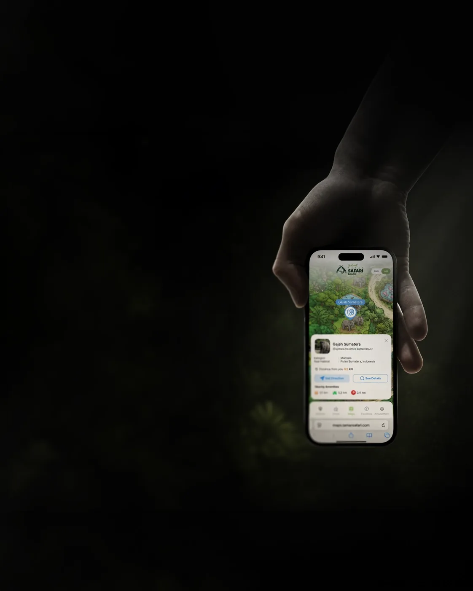

Applicants need a clear path
Help visitors compare programs, understand eligibility, and know what to prepare before applying.
A connected digital experience for the School of Management, Tribhuvan University—from discovering programs and finding notices to completing registration.

SOMTU brings prospective students, current students, faculty, and visitors into one clear university experience.
The website connects institutional information, programs, updates, events, research, resources, results, and registration. The design organizes these different content types into a coherent system that works across desktop and mobile.
Different audiences arrive with different tasks. The experience had to make programs easier to understand, updates easier to find, and registration easier to complete.
Help visitors compare programs, understand eligibility, and know what to prepare before applying.
Make notices, results, events, and official documents easy to scan and search.
Bring research, news, resources, and academic information together in one consistent experience.
Design one connected website where each audience can reach its task in a few taps, across more than ten feature areas and two screen sizes.
The work moved from information architecture to reusable page patterns, then into the program and registration journeys.
Make the main action on each page easy to spot, whether it is applying, checking a result, or finding a notice.
News, notices, events, research, and documents benefit from a shared search, filter, and browse pattern.
Progress, review, and confirmation help turn an extensive application into a guided journey.
Shared navigation and page structure keep ten-plus feature areas connected.
Each page brings its primary action and the information needed to complete it forward.
Search, filters, and pagination work consistently across update and resource pages.
A stepper, review, and confirmation make progress visible through registration.
Upcoming, ended, empty, and success states are considered as part of the experience.
Filters, forms, and long pages get patterns designed for the smaller screen.
Page families support program discovery, institutional updates, academic resources, and a structured application journey.



The first pass brought every category chip onto the mobile screen, matching the desktop layout.
Seven chips with counts crowded a 428 px viewport and pushed the results down. The revised pattern moves the full set into a filter sheet with sort, reset, and apply controls so the results stay in view.
Desktop patterns do not simply shrink. They need to be redesigned around the way people use a smaller screen.
The existing blue and orange identity was extended into a responsive system for the School of Management.
A clear hierarchy supports programs, notices, research, and resources. Reusable page components keep interactions familiar, while the 81 component variants document the system for development.
Navigation and core page structure establish continuity across feature areas.
Distinct information types are structured for reading, scanning, and action.
81 documented variants support consistent interface behavior and handoff.
Desktop and mobile use patterns suited to each screen size.
The deliverable covers the website structure and interface states needed to carry the experience into development.
A shared shell and list pattern connect the different academic content areas.
Upcoming, ended, empty, and success states belong in the experience from the start.
Stories, notices, and research each need a structure that fits the content.
Run quick tests on applying and finding an official notice.
Add concise decision notes alongside each page family.
Consider English and Nepali content patterns for notices and forms.